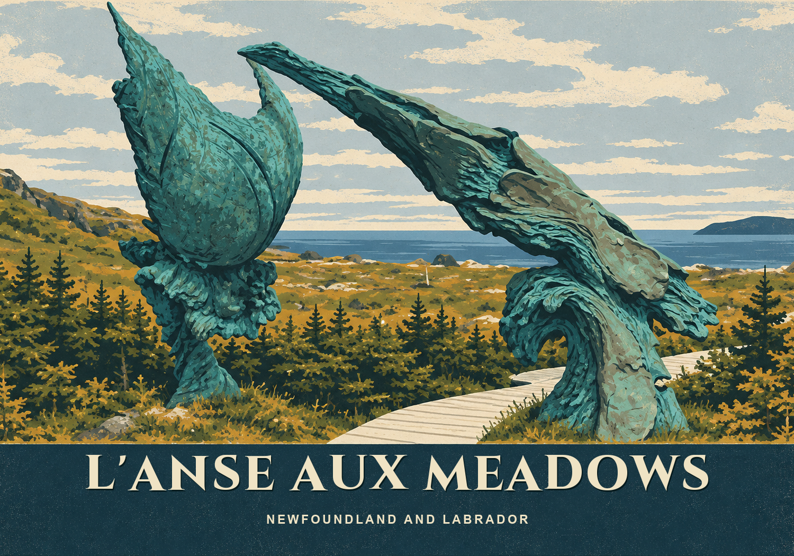
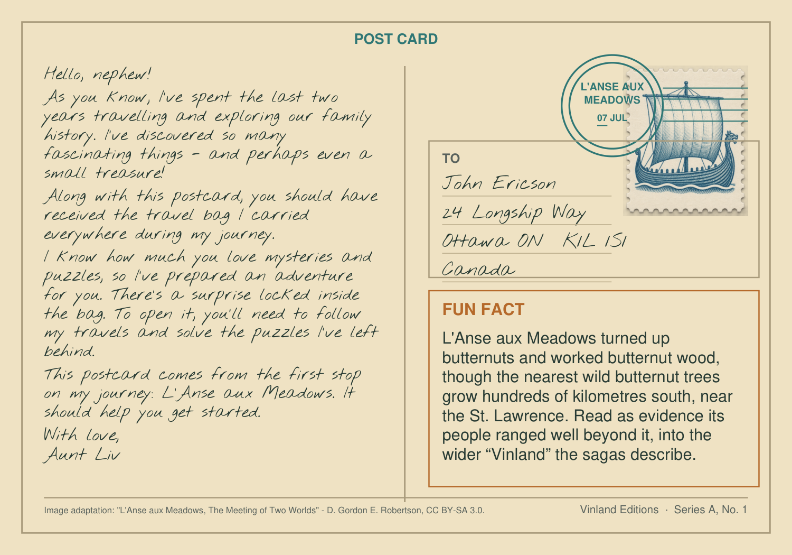
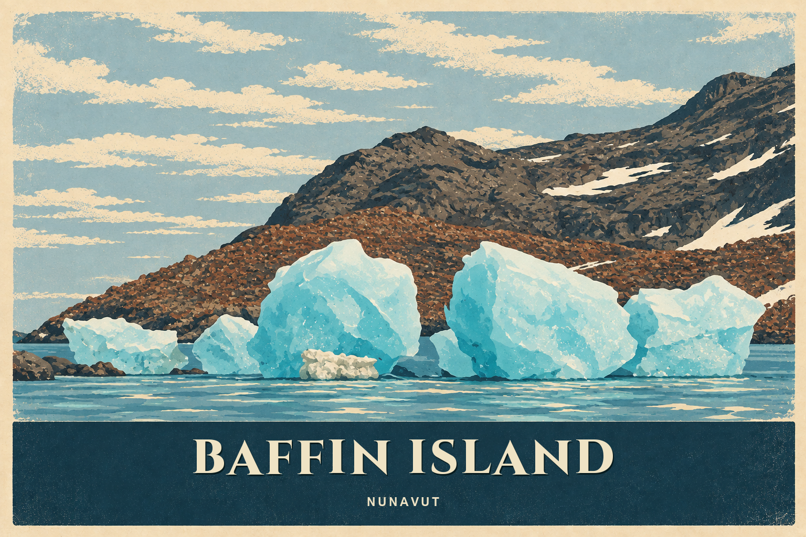
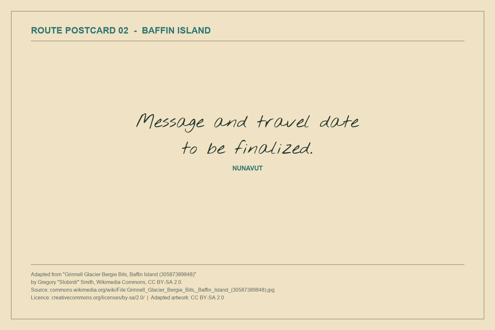
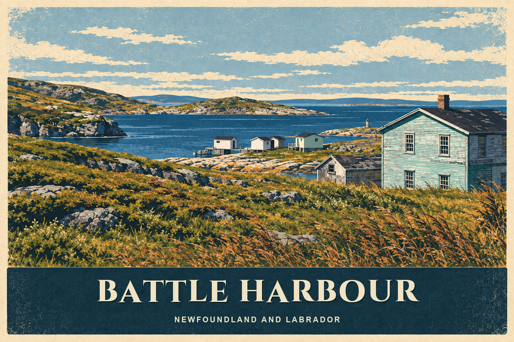
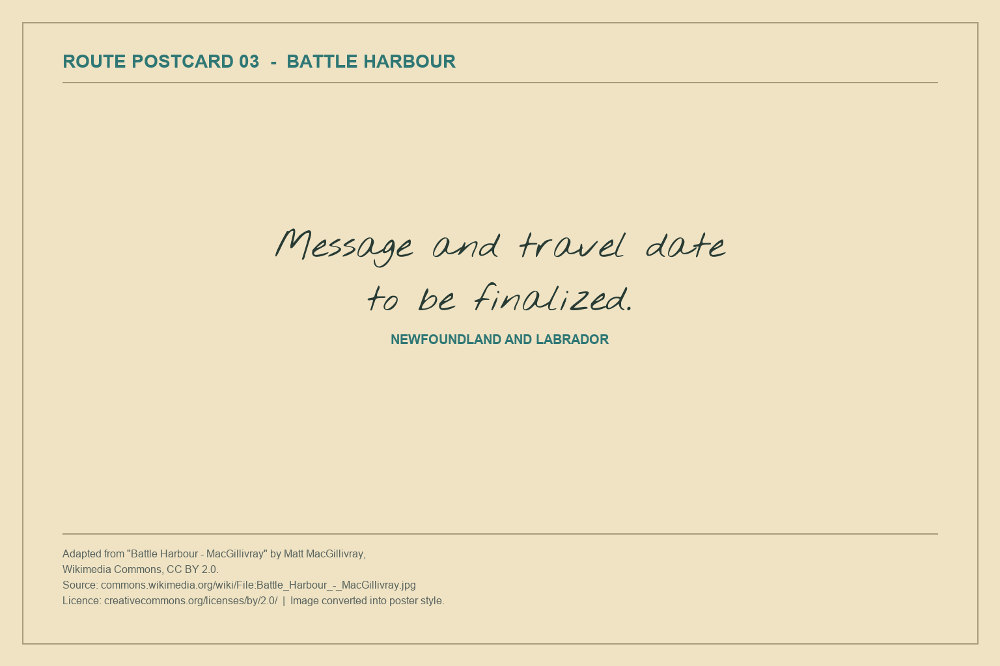
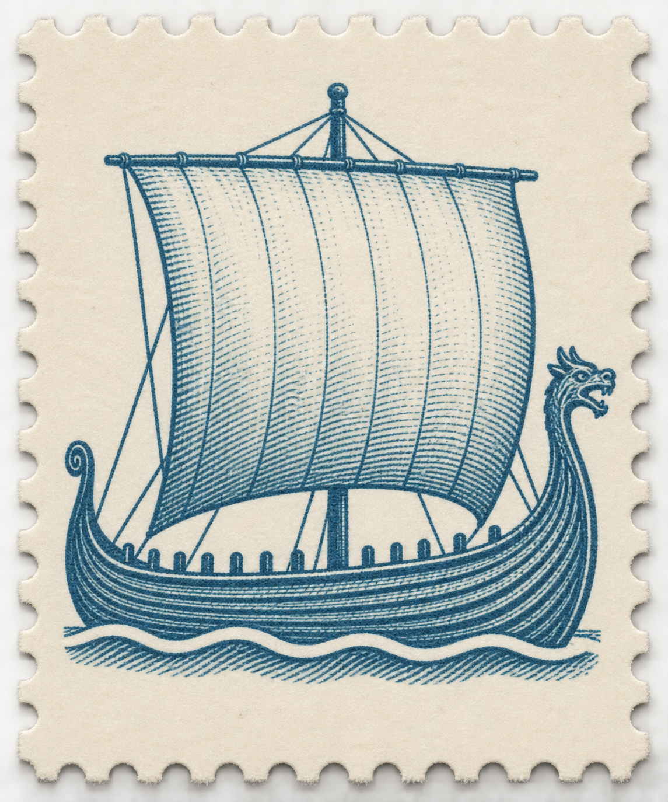
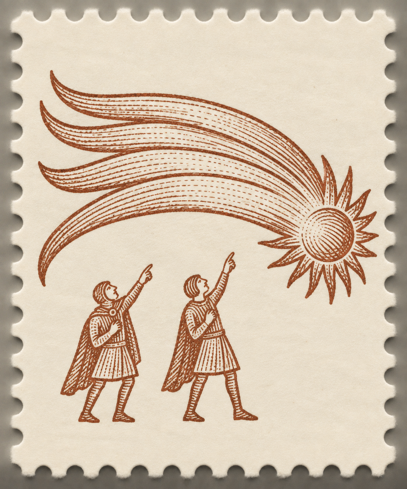
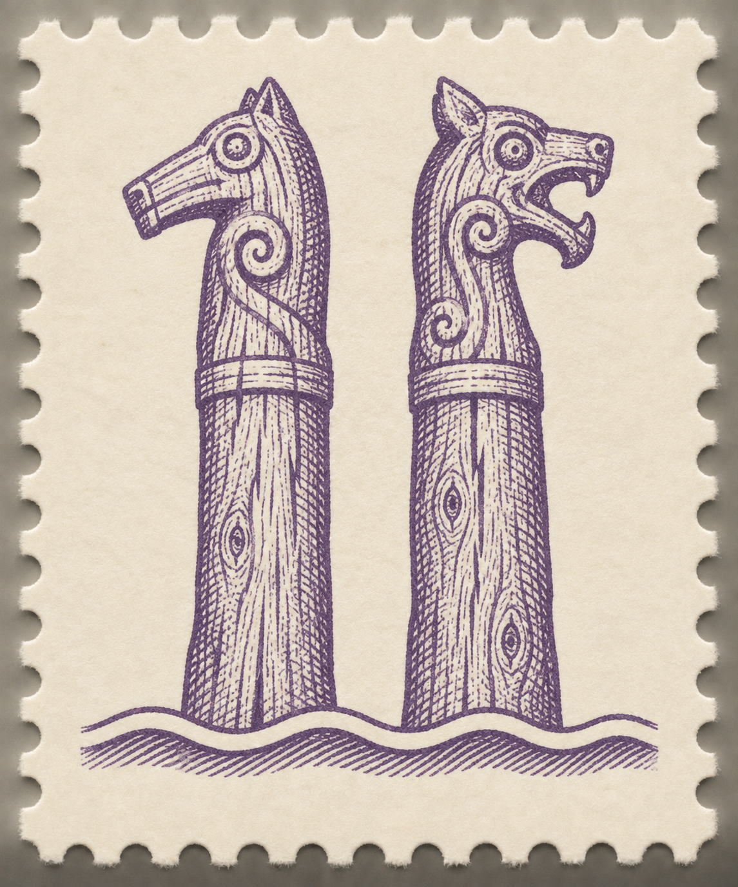
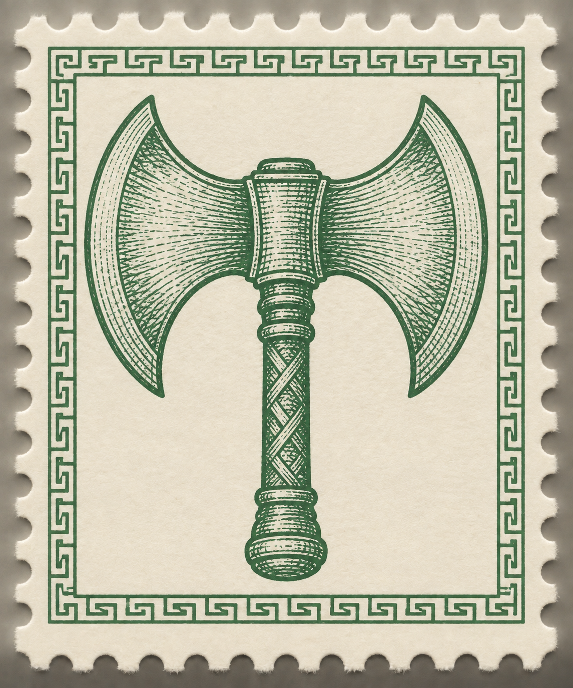

01 · L’Anse aux Meadows
Newfoundland and Labrador · finished front and back


Your great-aunt has sent you her field bag and the first postcard from a long journey. More cards are hidden inside. Together they lead to the invitation she wants you to earn.
Your great-aunt has been tracing the family’s Nordic origins. Her first postcard arrives with a locked field bag. Every solved section of the bag reveals more dated postcards from different places.
Players use the cards as ordinary clues along the way. Near the end they find a full map and realize the entire trip has been building one final answer.
Your aunt loves setting family challenges. This parcel is her invitation test. The locks protect each stage of her research and release the journey a few locations at a time.
Each postcard appears useful once, so players keep it without knowing its final purpose. The map changes the cards from souvenirs into plotted points. Connecting the dated locations reveals the final digits.
Locked pockets, tactile props, clues saved for later, a final answer built from collected pieces and a warm personal reward.
Weathered field notes, a miniature board, museum-style object labels and postcards that slowly build a route. Keep rune translation to one short puzzle so the rest feels varied.
Newfoundland and Labrador · finished front and back


Nunavut · back message and date pending


Newfoundland and Labrador · back message and date pending


L’Anse aux Meadows: D. Gordon E. Robertson, CC BY-SA 3.0. Baffin Island: Gregory “Slobirdr” Smith, CC BY-SA 2.0. Battle Harbour: Matt MacGillivray, CC BY 2.0. All three photographs were adapted into poster-style illustrations. Full source URLs and adaptation notes are recorded in the postcard source register.
The retired harbor-postcard prop has been removed. Current postcard artwork is collected in the Postcards section.
Your aunt’s private key assigns digits to three rune symbols. Read left to right.
Tap the matching key entries in order.
It teaches players to trust the supplied reference cards and gives access to the richer physical tasks. In the real bag, the key can be split across a catalogue card and the object tag.
This is her invented digit cipher using rune shapes. It is not a historical rune-to-number system.
Move the king to a gold corner in exactly three moves. Slide any distance horizontally or vertically. Dark pieces stay fixed. No jumping or captures. Read the digit where each move ends.
A custom solo puzzle inspired by hnefatafl. These simplified rules are printed on the prop. No knowledge of the full game required.
Design for repeat play: no writing on irreplaceable props, all loose pieces inventoried, and every puzzle given a clear reset state.
View the Koolehaoda vintage canvas backpack
The listing describes the L-Coffee version as a canvas-and-leather-style 35 L backpack sized 46 × 32 × 20 cm, with a main compartment and several pockets. Its field-bag look suits the story.
Candidate only. Before purchase, confirm current price and availability, then test the actual lock attachment points, pocket access, prop fit, hardware durability and reset workflow. Seller measurements and claims have not been independently verified.
Use an adventurous aunt, dry museum humour and satisfying discoveries. Keep danger fictional and light; avoid horror, solemn ritual or dense historical exposition.
The mystery should feel clever and curious, not childish. Let the props carry the atmosphere while clue wording stays direct.
Assume no prior Norse knowledge. Challenge should come from connecting evidence, handling objects and spotting patterns—not trivia, tiny print or obscure rune knowledge.
Difficulty target: a notch harder than the finished Hiking backpack. The lever is convergence — at least two codes should need three separate props — not obscurity.
No duration claim yet. Play-test with both adults and teens before setting one.
A final message hints that the dig has uncovered something alive.
Keep the ticket reveal and make the supernatural layer a final tease.
Players pin each postcard location and connect the stops with cord instead of drawing directly on the map.
This makes the last clue physical and resettable. Prototype pin spacing and route legibility before choosing the locations.
Compare a drawing, a repair note and a catalogue entry to identify a mislabeled replica. Its accession number opens the archive.
A swap for family records if you want less genealogy.
Current assumptions: mostly adults with potential teen players, no prior Norse knowledge, a table available, and reusable props throughout.
Full reasoning, prop specs and next steps live in the Design spec tab above.
The route is now the hero prop. Engineer the path first, then assign plausible dated stops to its vertices. That prevents the geography from producing unreadable digits.
| Container | Opens with | Inside |
|---|---|---|
| Outside / START | Already accessible | First dated postcard and locked field bag |
| Main compartment | Opening mechanism and answer pending | Notebook, rune key and tag, locked archive case, later dated postcard |
| Archive case | 582 · runes | Family records, king board, locked RAVEN and CROWN pouches, locked WELL pouch, final locked travel wallet, later dated postcard |
| RAVEN pouch | 427 · family records | Saga strips and later dated postcard(s) |
| CROWN pouch | 631 · king board | Saga ordering key and later dated postcard(s) |
| WELL pouch | 2468 · saga | Full map and remaining dated postcard(s) |
| Travel wallet | 1972 · candidate route code | Fictional ticket, personal letter, optional ending link |
The opening mechanism is undecided and the intermediate codes remain proposed design values. The candidate final route code is 1972; exact postcard dates and final printed-map legibility still need testing. Confirm existing lock hardware supports four digits before fixing the code.
Repack the wallet first, then the WELL pouch and two branch pouches. Put the remaining materials in the archive and main compartment. Leave only postcard 01 outside. Scramble every lock. Keep a packing photo and a numbered spare postcard set.
Before final production: choose and test the replacement opening mechanism; make every date and place name unambiguous; confirm every route point is easy to locate; test that the completed lines resemble only the intended digits; run an unfamiliar group through the paper version. Observe solve times before choosing a duration target.
Historical references: British Museum: hnefatafl; Museum of Gaming: an example rule set; National Museum of Denmark: Viking Age runes. Viking Age rune alphabets had 16 characters with some shared sounds. The aunt’s cipher, saga, genealogy and solo board rules are invented for this game.
The aunt’s four research trails are plotted separately and read from left to right. Connecting each trail’s stops in order draws 1 · 9 · 7 · 2. These are fictional visit sequences built from researched associations, not verified historical itineraries.
Open the separate route workshop to adjust stops or compare the shapes.
Baffin Island → Labrador → L’Anse aux Meadows
France, Normandy and England
Three Icelandic locations
Norway → Rus’ → Mediterranean → northern Europe
Maps use approximate modern anchors and a north-up Web Mercator projection. Lines show the aunt’s fictional visit order, not verified historical travel paths. Offline coast data: Natural Earth; mapping: Leaflet.
Across the Atlantic · 3 stops
Rollo · William · Richard · 6 stops
Icelandic settlement trail · 3 stops
Eastward and back again · 6 stops
Build specification for The Raven Inheritance, derived from the design decisions taken on 9–10 September 2026. Covers the postcard system, the cipher, the physical props and the clue-writing standard. Container and lock placement stay out of scope until the backpack and pouches are bought.
AGENTS.md, none of it should be printed on a prop until verified. The list of claims needing verification is at the bottom of this tab.
The Hiking backpack is the calibration. Its codes sit at the intersection of two or three props, its items arrive before their purpose is known, and the part it hides is the ordering rule rather than the data. Norse should be a notch harder than that.
Run every puzzle through these:
Answering all three makes the puzzle obvious. Answering none makes it unfair. Answer two, hide one. The hidden one should almost always be the third.
Numbers and letters stay in plain sight. What players have to earn is which ones to use and in what sequence. This is what the Hiking sticker puzzle does: the digits are visible, the historical-era ordering is the puzzle.
The cheapest strong aha is re-reading a prop already read for a different reason. Plant ordering rules as throwaway habits in the aunt's letters, then make one of them load-bearing three puzzles later.
At least two codes in the game should need three separate props: a data source, a selection rule and an ordering rule. This is the main difficulty lever and it is cheaper than adding puzzles.
Where possible the final step should produce a word or a shape that is visibly right before the lock is touched. Hiking does this with MOON.
Nothing is a dead end. A prop that looks irrelevant now must be load-bearing later. Never spend a player's attention without eventually repaying it.
No outside knowledge, ever. Rune tables, coin references and board rules all ship inside the bag, the way Hiking ships a periodic table and a calculator.
One card per route stop, giving 18 cards across the four trails. At this volume the cards stop being individual clues and become a corpus, which is a better toy: it supports grouping, sorting, anomaly-spotting and a much larger final reveal.
| Decision | Value |
|---|---|
| Count | 18 — one per stop in TravelMap/Norse_Aunt_Route_Plan.json (Leif 3, family 6, Aud 3, Harald 6) |
| Size | Approx. 5 × 3.5 in (vintage postcard proportion) |
| Universal design elements | Series motif (trail identity) and postmark (date and place) — on all 18 |
| Sparse design elements | Denominations, extra text, stamp angle, anomaly stamps — on small subsets |
| Ordering key | The postmark date, on every card |
| Active clue cards | Five or six. The rest are quiet. |
If every card carries a clue, players strip-mine each new card and the corpus becomes a chore. With five or six active cards among 18, finding an active one feels like discovery rather than service delivery.
Quiet cards are not filler. They are what makes the final map land, because players will have been carrying a dozen cards they believed were scenery.
A design element on every card carries structure. A design element on only a few cards carries a puzzle — because its scarcity is itself the signal. Both layers are needed and they do different jobs.
| Layer | Element | On | Job |
|---|---|---|---|
| Universal | Series motif | All 18 | Which trail this card belongs to |
| Postmark | All 18 | Date and place — the ordering key for the endgame and for each trail internally | |
| Sparse | Denomination / price | ~4 cards | Four digits for a 4-digit lock |
| Extra printed text | ~5 cards | Five letters for a word lock | |
| Stamp angle | ~4 cards | Four directions for a directional lock | |
| Anomaly stamp | ~3 cards | Selects which cards matter, rather than carrying data itself |
Size each sparse set to the lock it feeds. Four cards bearing a price is a 4-digit lock announcing its own shape.
Each trail gets its own stamp series — a ship series for Leif, a Byzantine series for Harald, and so on. Players absorb this passively within a few cards; it is free visual grouping across a large corpus and needs no instruction.
Then break it. A card whose stamp belongs to the wrong series is a scream. Once the convention is internalised, a ship stamp on a Kyiv card is spotted with no prop, no hint and no instruction — the cheapest hard puzzle in the design.
Its job is to be a selector, not a data channel. It answers "where do I look?" while a sparse data element answers "what do I take?" and the postmark answers "in what order?" That maps the three questions onto three design elements, which is the system players are really learning.
This is the same instinct as the "wrong museum label" idea already in this guide, so the two reinforce each other.
Every card carries the universal pair. The sparse slots are now assigned by card — digits, letters and directions are not chosen yet, only which card carries which channel.
Reading the assignment. Leif's trail — the three cards already built — carries one card each of price, extra text and tilted stamp, so the trail that's already printed teaches all three data channels before players meet the others. The anomaly channel is deliberately withheld from Leif's own cards: its motif is the one borrowed to mislabel Kyiv, so the "true" ship series stays clean everywhere it actually belongs. Kyiv also carries a price, the one deliberate double-duty card in the set, placed where the anomaly already draws attention. The two six-stop trails (Rollo, Harald) each keep a couple of genuinely quiet cards; the two three-stop trails (Leif, Aud) don't have room to spare one, so every one of their cards is doing something.
Three cards carry no sparse element at all: Battle, Staraya Ladoga and Sicily.
Overlap. A card carrying both a price and an anomaly stamp is doing double duty, and players who have learned to treat each element as belonging to one puzzle will have to unlearn it. Save deliberate overlap for the last postcard puzzle before the map.
Postcards/References/, and in build_postcard_collection.py the SIZE and PAGE constants must change together.
Motif, colour and first-pass artwork per trail are decided. Denomination typography, the extra-line style and the tilt convention are deliberately left out; they depend on the still-open lock questions below.
| Trail | Colour | Motif | Why |
|---|---|---|---|
| Leif Erikson | #216580 | A longship | The obvious, strongest read for a Vinland voyage; matches the route-map colour already used for this trail. |
| Rollo & descendants | #a2562d | The Bayeux comet | Halley's Comet as depicted in the Bayeux Tapestry (captioned ISTI MIRANT STELLA). Ties directly to Bayeux, a stop already on this trail, and avoids a second ship motif competing with Leif's. |
| Aud the Deep-Minded | #6d528b | High-seat pillars (öndvegissúlur) | The carved posts a settler cast overboard to let the gods choose a landing site — Aud's own saga does this. Symmetrical, stamp-friendly silhouette, and specific to her rather than generic Norse imagery. |
| Harald Hardrada | #467444 | A labrys (double-headed axe) | Reads as Varangian Guard / Byzantine service. Deliberately not his raven banner (Landeyðan) — a raven motif here would compete with the game's own raven/HRAFN emblem right where Kyiv's anomaly stamp needs to read as clearly not Harald's own series. |

#216580
#a2562d
#6d528b
#467444First-pass artwork selected. Before it is placed across all 18 postcards, print each stamp at roughly 20×24 mm and confirm that the fine lines remain clear.
Each anomaly card shows another trail's motif in its own trail's stamp slot. Only one of the three is decided so far:
| Card | Own trail | Shows instead |
|---|---|---|
| 15 · Kyiv | Harald Hardrada | Leif's longship Decided |
| 04 · Châlus | Rollo & descendants | Not yet assigned Parked |
| 11 · Hvammur | Aud the Deep-Minded | Not yet assigned Parked |
Parked. Assigning these two depends on deciding how many cards should actually be active (see the note on card density above) — picking a wrong motif now would be getting ahead of that call. Not needed to start the stamp artwork below.
One shared style across all four series, so they read as one issuer's stamps rather than four unrelated pictures. These briefs produced the artwork shown above and remain the reference for later revisions.
Shared style, all four: single motif, centred, filling most of the frame. Engraved-line illustration in the style of a Victorian-to-Edwardian postage stamp — fine cross-hatching for shading, no flat colour fills — printed in one dominant ink colour (the trail colour) on a lightly tinted paper ground, not full-colour. A plain perforated border, no denomination, no lettering, no country name, and no date: those are either added later per-card (price, postmark) or intentionally left out. Portrait or landscape orientation, whichever suits the motif, consistent within a series across all its cards.
| Trail | Codex prompt |
|---|---|
| Leif Erikson | A Viking longship under full sail, seen from the side, dragon-head prow, single mast, riding a cresting wave. Engraved-line postage-stamp illustration, single ink colour #216580 on cream paper, fine cross-hatched shading, plain perforated border, no text. |
| Rollo & descendants | A comet with a long curving tail low over a horizon, in the style of the Bayeux Tapestry's depiction of Halley's Comet, with two small stylised figures below pointing up at it. Engraved-line postage-stamp illustration, single ink colour #a2562d on cream paper, fine cross-hatched shading, plain perforated border, no text. |
| Aud the Deep-Minded | Two carved wooden high-seat pillars (öndvegissúlur) standing side by side on a shoreline, each topped with a simple carved figure, waves at their base. Engraved-line postage-stamp illustration, single ink colour #6d528b on cream paper, fine cross-hatched shading, plain perforated border, no text. |
| Harald Hardrada | A single labrys (double-headed axe), blade upright, centred, with a simple Byzantine meander (key-pattern) border framing it. Engraved-line postage-stamp illustration, single ink colour #467444 on cream paper, fine cross-hatched shading, plain perforated border, no text. |
The screen-size review is complete. Sanity-check that all four remain readable and distinguishable at true stamp size (roughly 20×24 mm on the finished card) before producing every card's stamp from them.
A real Norse cipher form: a vertical stem with branches on either side. The left branches count which group a rune belongs to; the right branches count its position within that group. Every character is a pair of small numbers drawn as tally strokes.
| Group | Runes |
|---|---|
| 1 | ᚠ f · ᚢ u · ᚦ þ · ᚬ ą · ᚱ r · ᚴ k |
| 2 | ᚼ h · ᚾ n · ᛁ i · ᛅ a · ᛋ s |
| 3 | ᛏ t · ᛒ b · ᛘ m · ᛚ l · ᛦ ʀ |
Old Norse for raven, which is the title of the game. Five runes to five letters with no fudging, and it self-verifies the moment players read it. It fits a five-letter lock or a five-ring cryptex.
| Rune | Group (left branches) | Position (right branches) |
|---|---|---|
| ᚼ h | 2 | 1 |
| ᚱ r | 1 | 5 |
| ᛅ a | 2 | 4 |
| ᚠ f | 1 | 1 |
| ᚾ n | 2 | 2 |
Two of the three questions answered, the third earned.
Two payoffs from one prop — a directional code from solving the board, and a postcard released by the board itself.
No complete Viking rules survive, so I wrote my own. The king slides any distance in a straight line. Dark pieces never move, and they block him. Get him to a corner in exactly four moves.
Three lines, no captures, no prior knowledge. The word exactly is what forces a unique solution. The historical framing is also true: no complete Viking-Age tafl ruleset survives, so the aunt writing her own is honest rather than a shortcut.
Output: four directions, straight into a directional lock. Do not print digits on the squares — digits on a game board announce that it is a puzzle prop.
Print the board with a cavity under the throne square and make the king piece the key that opens it. Solving the board physically releases a postcard, with no lock and no code — the best tactile beat available in the bag.
The most Hiking-like puzzle in the set, and the only one that introduces a genuinely new physical verb: weighing.
Three replica coins — an Anglo-Saxon penny, an Islamic dirham, a Byzantine coin. Between them they are Rollo's and Harald's biographies in three objects, so they tie the props to the map without a line of instruction.
Three prop types converge; the data is visible throughout; the ordering rule is the only hidden part — and it is the sole reason a balance is in the bag. Viking traders carried folding balances and cubo-octahedral weights, so the object belongs in the story.
A printed or 3D-printed comb with broken teeth, laid across a postcard message so that only certain words show through the gaps. Rotated or flipped, one comb decodes several cards.
Combs are among the most common Viking finds and broken teeth are entirely plausible, so the object hides in plain sight. The aunt's letter says "my grandmother's comb — I never travel without it." Pure sentiment, until it isn't.
Reuse it. The comb decodes cards early; later, its broken-tooth pattern reads as a tally. Reusing one prop across two stages is harder for players than a new prop and cheaper for you to build.
Each tool opens a class of clue. Each should have one primary job so it never feels decorative.
Primary job: the trail reading order. The order in which the four trails are read is currently "left to right," which is arbitrary — the strongest moment in the game resting on the weakest rule. Instead, write four small numerals beside the trails on the map in UV ink. The order becomes something she left for you, and the code 1972 survives untouched.
This is the highest-value use of the pen. Spend it here before anywhere else.
Primary job: the illustrations. A red-noise wash over each postcard image; under the filter, one object per card is circled or a latitude appears in the sky. Adds a clue layer with no extra prop.
Needs work Home printers vary a great deal on this. Test colour accuracy before committing any puzzle to it.
Primary job: the branch runes. Carve them small enough that the tally strokes are ambiguous to the naked eye. The magnifier turns "I think that's three branches" into certainty, which makes it a real tool rather than a gimmick.
Puzzles whose answer is an instruction rather than a code. They work best exactly where a lock would be clumsy. Three is the cap — more and the locks stop feeling like the spine.
| # | Role | Placement | Purpose |
|---|---|---|---|
| 1 | Teach | Early, at the transition into the coin stage. Something on the order of WEIGH WHAT SHE TRADED. | Breaks the assumption that every answer is a number, early enough that the later ones do not come out of nowhere. |
| 2 | Tool | On the comb. | The honest way to reveal that the comb is an instrument rather than a keepsake, without spending a hint. |
| 3 | Hinge | At the map reveal. EVERY CARD IS A PLACE. | The pivot of the whole game. A lock would say "you were right." A sentence says "she knew you would get here." |
The first three unblock artwork production. Nothing below needs the backpack to be bought first.
Which of the 18 cards carry a price, extra text, a tilted stamp and an anomaly stamp is now fixed in the worksheet above. The digits, letters and directions those channels actually carry are still unassigned — that depends on the two open lock conflicts below.
The first-pass artwork is shown above. A true-size print test at roughly 20×24 mm is still required before the stamps are placed across all 18 cards. Two anomaly wrong-trail variants remain parked pending the card-density decision.
From Postcards/References/ at 1500 × 1050 px, and change SIZE and PAGE together in build_postcard_collection.py. Do not rescale the current 1536 × 1024 art.
They carry the reading direction for the rune stick, the pointer that first teaches each sparse channel, and the comb's disguise. This is the writing that makes the clues land, and it is currently the largest unwritten piece.
Search for a blocker layout with exactly one four-move escape, then fix the direction sequence it produces.
Print at true size and test pin spacing and digit legibility before choosing between pinned cards, cord, and an overlay. The family 9 is the riskiest shape.
Red filter fidelity, branch-rune legibility at carved size, and a full 18-card print to check table footprint.
Everything in the final section of this tab, before any of it reaches a prop.
Undecided by choice. The candidates are pinning the cards onto the map directly, pins and cord with the cards beside it, or a transparent overlay. Pin spacing and digit legibility must be tested at true print size first. The family 9 is already flagged as the riskiest shape, and 18 cards makes the footprint question sharper.
Print a test sheet and check that the noise wash genuinely hides the hidden layer at arm's length and genuinely reveals it under the filter.
Search the board layout to confirm exactly one four-move escape exists before printing.
Carve or print at final size and confirm the tally strokes are countable with the magnifier and genuinely ambiguous without it.
leif route used in the Travel routes tab. The built cards therefore already form one complete trail, the one drawing the digit 1. Useful if intentional: the postcards teach the mechanic on the simplest trail and the map extends it to the other three.
None of the following has been source-checked. Each is used above and must be confirmed, corrected or dropped before it reaches a prop.
The visual system this page already uses, written down so new content — stamp artwork, later props, future tabs — stays consistent with it. Nothing here is a new decision; it's what the page already does, made explicit.
Core chrome first, then the two accent colours used for status and emphasis, then the four trail colours (also used for the stamp series above). Illustration-specific colours inside individual SVG diagrams aren't part of this system and are chosen per diagram.
Trail colours — one per route, reused everywhere a trail is identified: route maps, the postcard corpus worksheet, and now the stamp series.
Headings only (h1, h2), the route digits and the trailhead numerals. A local file, loaded from Fonts/Cinzel. Carries the "museum label" formality.
The workhorse font for everything that isn't a heading, a quote, or a code.
Blockquotes, lock codes (.code), the rune-symbol display, and postcard message copy. A warmer serif for anything meant to feel hand-written or old.
Carried over from the Props & choices tab's presentation direction — restated here as writing guidance, not redecided.
An adventurous aunt, dry museum humour, danger kept fictional and light. Avoid horror, solemn ritual, or dense historical exposition.
Challenge comes from connecting evidence, handling objects and spotting patterns — not trivia, tiny print or obscure rune knowledge.
Assume no prior Norse knowledge. Clue wording stays direct even when the props carry the atmosphere.
A notch harder than Hiking, via convergence — at least two codes needing three separate props — not obscurity.
Solid green for the primary action or the active nav tab; an outlined neutral button everywhere else. No third button style.
Tags label the whole page or a whole card (top of the header, "Decided" lists). Pills are Design-spec-tab only and carry status: green = done/default, rust = open question, brown = needs a test.
The single reusable content container: cream-white fill, a thin warm-grey border, a soft corner radius, generous padding. Called .panel outside the Design spec tab and .card inside it — same look, scoped separately so the two tabs' styles can't leak into each other.
A left-border callout in place of an icon: amber border for a note worth flagging, rust border for something that actually blocks progress. Used sparingly — a page of warnings stops reading as a warning.
Minimal ruled rows, no vertical lines, small-caps-style uppercase headers in muted grey. Used for any structured comparison (stamp series, container contents, route stops) rather than building one-off layouts.
.dot/.swatch) are the only abstract icon in use, for legends: small, flat, colour-coded squares identifying a trail or a design channel at a glance — as seen in the postcard corpus worksheet and the colour swatches on this page.#f0e6cf fill, #a99a7b/#8a7d63 stroke — instead of being illustrated individually. New diagrams should reuse those two stroke tones rather than introducing new ones.